Classification à l’aide des plus proches voisins¶
La figure suivante représente un problème de classification classique. On dispose d’un nuage de points réparti en deux classes. Un nouveau point semblable aux précédents se présente, sa classe est inconnue. L’objectif est de lui attribuer une classe en utilisant le fait qu’on connaît la classe d’appartenance des autres points.
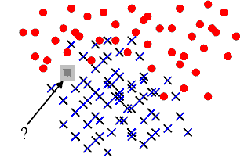A partir d’un nuage de points pour lesquels la classe d’appartenance est connue, comment classer un nouveau point pour lequel cette classe est inconnue ? Une méthode simple consiste à attribuer à ce nouveau point la même classe que le plus proche des points appartenant au nuage initial. C’est la méthode des plus proches voisins (ou nearest neighbours) Elle est facile à implémenter mais peu utilisée car souvent très gourmande en temps de calcul lorsque le nuage de points est conséquent. Le premier paragraphe décrit cette méthode, les suivants cherchent à accélérer l’algorithme selon que le nuage de points appartient à un espace vectoriel ou non. La dernière partie présente l’algorithme LAESA pour le cas où le nuage de points appartient à un espace métrique quelconque.
Principe¶
Cette méthode est la plus simple puisqu’elle consiste à associer
à  , l’élément à classer, le label
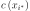 de l’élément le plus proche
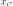 dans l’ensemble 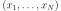.
Ceci mène à l’algorithme de classification suivant :
, l’élément à classer, le label
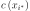 de l’élément le plus proche
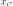 dans l’ensemble 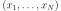.
Ceci mène à l’algorithme de classification suivant :
Algorithme A1 : 1-PPV ou plus proche voisin
Soit 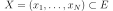 un ensemble
d’éléments d’un espace métrique quelconque,
soit les classes
associées à chacun des éléments de  . On note
. On note
 la distance définie sur l’espace métrique
la distance définie sur l’espace métrique
 . Soit un élément à classer, on cherche
à déterminer la classe 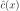 associée à .
On définit comme étant :
. Soit un élément à classer, on cherche
à déterminer la classe 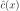 associée à .
On définit comme étant :
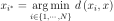
Alors 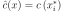.
Cet algorithme est souvent appelé 1-PPV
(ou 1-NN pour Nearest Neighbors).
Il existe une version améliorée k-PPV qui
consiste à attribuer à la classe
la plus représentée parmi ses  plus proches voisins.
plus proches voisins.
Algorithme A2 : k-PPV ou k-plus proches voisins
Soit un ensemble
d’éléments d’un espace métrique quelconque,
soit les classes
associées à chacun des éléments de . On note
la distance définie sur l’espace métrique .
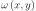 est une fonction strictement positive
mesurant la ressemblance entre et  .
Soit un élément à classer, on cherche à déterminer la
classe 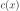 associée à .
On définit l’ensemble 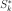
incluant les -plus proches voisins de
, cet ensemble vérifie :
.
Soit un élément à classer, on cherche à déterminer la
classe 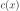 associée à .
On définit l’ensemble 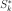
incluant les -plus proches voisins de
, cet ensemble vérifie :
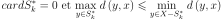
On calcule les occurrences  de chaque classe
de chaque classe
 dans l’ensemble :
dans l’ensemble :
(1)¶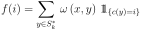
On assigne alors à la classe choisie dans l’ensemble :
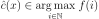
Dans sa version la plus simple, la fonction
utilisée lors du calcul de la contribution  (1)
est constante. Mais il est possible de lui affecter une valeur tenant
compte de la proximité entre et .
La table suivante donne quelques exemples de contributions possibles.
(1)
est constante. Mais il est possible de lui affecter une valeur tenant
compte de la proximité entre et .
La table suivante donne quelques exemples de contributions possibles.
fonction constante |
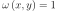 |
distance inverse |
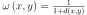 |
noyau |
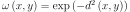 |
Exemple de contribution 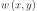 pour
l’algorithme des k-ppv.
Ces fonctions sont toutes décroissantes (strictement ou non)
par rapport à la distance .
L’inconvénient majeur de la méthode des plus proches voisins
est sa longueur puisqu’elle implique le calcul des distances
entre et chacun des éléments de l’ensemble
. C’est pourquoi de nombreuses
méthodes d’optimisation ont été développées afin d’accélérer ce
processus. Les deux premiers paragraphes traitent le cas où les
points  appartiennent à un espace vectoriel et ont donc
des coordonnées. Les suivant traitent le cas où les points
n’ont pas de coordonnées et appartiennent à un espace métrique quelconque.
appartiennent à un espace vectoriel et ont donc
des coordonnées. Les suivant traitent le cas où les points
n’ont pas de coordonnées et appartiennent à un espace métrique quelconque.
B+ tree¶
Ce premier algorithme B+ tree
s’applique dans le cas réel afin d’ordonner
des nombres dans un arbre de sorte que chaque noeud ait un
père et pas plus de  fils.
fils.

Définition D1 : B+ tree
Soit  un B+ tree, soit
un B+ tree, soit  un noeud de ,
il contient un vecteur
un noeud de ,
il contient un vecteur  avec
avec  et
et  .
Ce noeud contient aussi exactement
.
Ce noeud contient aussi exactement  noeuds fils
notés
noeuds fils
notés  . On désigne par
. On désigne par  l’ensemble des descendants du noeud
l’ensemble des descendants du noeud  et
et
 .
Le noeud vérifie :
.
Le noeud vérifie :

Cet arbre permet de trier une liste de nombres, c’est une
généralisation du tri quicksort
pour lequel  . Comme pour le tri quicksort, l’arbre est construit
à partir d’une série d’insertions et de cet ordre dépend la rapidité du
tri. L’espérance du coût (moyenne sur tous les permutations possibles de
éléments), le coût de l’algorithme est en 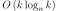.
. Comme pour le tri quicksort, l’arbre est construit
à partir d’une série d’insertions et de cet ordre dépend la rapidité du
tri. L’espérance du coût (moyenne sur tous les permutations possibles de
éléments), le coût de l’algorithme est en 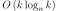.
R-tree ou Rectangular Tree¶
L’arbre R-tree est l’adaptation du mécanisme du B+ tree au cas multidimensionnel (voir [Guttman1984]). La construction de cet arbre peut se faire de manière globale - construction de l’arbre sachant l’ensemble de points à classer - ou de manière progressive - insertion des points dans l’arbre les uns à la suite des autres -. Toutefois, ces méthodes sont resteintes à des espaces vectoriels.

|

|
Illustration d’un R-tree en deux dimensions, figure extraite de [Sellis1987], la première image montre des rectangles pointillés englobant d’autres rectangles en trait plein. Chaque style de trait correspond à un niveau dans le graphe de la seconde image.
Il n’existe pas une seule manière de construire un R-tree,
les noeuds de ces arbres suivent toujours la contrainte des
B+ tree qui est d’avoir un père et au plus fils.
Les R-tree ont la même structure que les B+ tree ôtée de
leurs contraintes d’ordonnancement des fils. De plus, ces arbres organisent
spatialement des rectangles ou boîtes en plusieurs dimensions comme le suggère la
figure précédente. Les boîtes à organiser seront nommés les objets,
ces objets sont ensuite regroupés dans des boîtes englobantes.
Un noeud d’un R-tree est donc soit une feuille,
auquel cas la boîte qu’il désigne est un objet, dans ce cas, il n’a
aucun fils, soit le noeud désigne une boîte englobante 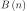.
On désigne par 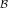 l’ensemble des boîtes d’un espace
vectoriel quelconque et 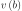 désigne son volume. Pour un
noeud non feuille, 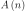 désigne l’ensemble
des descendants de ce noeud. est défini par :
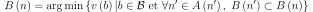
La recherche dans un R-tree consiste à trouver tous les objets
ayant une intersection avec une autre boîte ou fenêtre  , soit l’ensemble 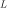 :
, soit l’ensemble 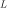 :
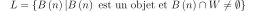
Cet ensemble est construit grâce à l’algorithme suivant :
Algorithme A3 : recherche dans un R-tree
Les notations sont celles utilisées dans ce paragraphe.
On désigne par  le noeud racine d’un R-tree.
Soit un noeud, on désigne par 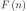
l’ensemble des fils de ce noeud.
le noeud racine d’un R-tree.
Soit un noeud, on désigne par 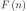
l’ensemble des fils de ce noeud.
initialisation
itération

est l’ensemble cherché.
Il reste à construire le R-tree, opération effectuée par la répétition successive de l’algorithme suivant permettant d’insérer un objet dans un R-tree.
Algorithme A4 : insertion d’un objet dans un R-tree
Les notations utilisées sont les mêmes que celles de
l’algorithme de recherche.
On cherche à insérer l’object désigné par son noeud
feuille 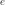. On suppose que l’arbre contient au
moins un noeud, sa racine . On désigne également
par 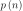 le père du noeud . Chaque noeud
ne peut contenir plus de  fils. On désigne par
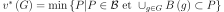.
fils. On désigne par
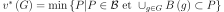.
sélection du noeud d’insertion
de  défini par :
défini par :
ajout du noeud
Si 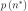 a moins de fils, alors le
noeud devient le fils de
et 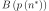 est mis à jour d’après l’étape précédente.
L’insertion est terminée. Dans le cas contraire, on sépare découpe le
noeud en deux grâce à l’étape suivante.
découpage des noeuds
L’objectif est de diviser le groupe  composé de
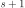 noeuds en deux groupes
composé de
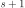 noeuds en deux groupes  et .
Tout d’abord, on cherche le couple
et .
Tout d’abord, on cherche le couple  qui minimise
le critère 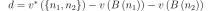
alors : 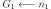, 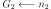 et
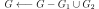
qui minimise
le critère 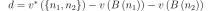
alors : 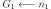, 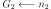 et
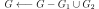

Si la recherche est identique quel que soit l’arbre construit, chaque variante de la construction de l’arbre tente de minimiser les intersections des boîtes et leur couverture. Plus précisément, l’étape qui permet de découper les noeuds est conçue de manière à obtenir des boîtes englobantes de volume minimale et/ou d’intersection minimale avec d’autres boîtes englobantes. L’algorithme R+~Tree (voir [Sellis1987]) essaye de minimiser les intersections entre boîtes et les objets à organiser sont supposés n’avoir aucune intersection commune. La variante R* tree (voir [Beckmann1990]) effectue un compromis entre l’intersection et la couverture des boîtes englobantes. L’algorithme X-tree (voir [Berchtold1996]) conserve l’historique de la construction de l’arbre ce qui lui permet de mieux éviter les intersections communes entre boîtes. Ces techniques appartiennent à une classe plus larges d’algorithmes de type Branch and Bound.
LAESA¶
Cet algorithme permet de chercher les plus proches voisins
dans un ensemble inclus dans un espace métrique quelconque.
Il s’appuie sur l’inégalité triangulaire. L’algorithme LAESA
ou Linear Approximating Eliminating Search Algorithm,
(voir [Rico-Juan2003]) consiste à éviter un trop grand nombre
de calculs de distances en se servant de distances déjà calculées
entre les éléments de et un sous-ensemble  inclus dans contenant des pivots. La sélection des pivots
peut être aléatoire ou plus élaborée comme celle effectuée par
l’algorithme qui suit, décrit dans l’article [Moreno2003].
inclus dans contenant des pivots. La sélection des pivots
peut être aléatoire ou plus élaborée comme celle effectuée par
l’algorithme qui suit, décrit dans l’article [Moreno2003].
Algorithme A5 : LAESA : sélection des pivots
Soit un ensemble de points, on cherche à déterminer un sous-ensemble de pivots .
initialisation
calcul de la fonction 
mise à jour de
L’algorithme LAESA utilise les pivots pour diminuer
le nombre de calculs en utilisant l’inégalité triangulaire.
Par exemple, soit un élément à classer,
un pivot,  un point du nuage. On suppose qu’on connaît
,
un point du nuage. On suppose qu’on connaît
,  et
et  la distance
du point à un autre point du nuage. L’inégalité triangulaire
permet d’affirmer que si : ,
alors il n’est pas nécessaire de calculer la distance
pour affirmer que . L’élément
ne peut être l’élément le plus proche.
la distance
du point à un autre point du nuage. L’inégalité triangulaire
permet d’affirmer que si : ,
alors il n’est pas nécessaire de calculer la distance
pour affirmer que . L’élément
ne peut être l’élément le plus proche.
Algorithme A6 : LAESA
Soit un ensemble de points,
un ensemble de pivots inclus dans .
On cherche à déterminer le voisinage de
inclus dans vérifiant :
On suppose que la matrice a été calculée préalablement comme suit :
initialisation
est la distance du point au pivot le plus proche.recherche du plus proche élément
Résultats théoriques¶
L’article [Farago1993] démontre également qu’il existe une
majoration du nombre moyen de calcul de distances pour peu
que la mesure de l’espace contenant l’ensemble
et l’élément soit connue et que l’ensemble
des pivots vérifie :
L’algorithme développé dans [Farago1993] permet de trouver
le point de plus proche d’un élément dans un
ensemble selon l’algorithme suivant :
Algorithme A7 : plus proche voisin d’après [Farago1993]_
Soit et . Soit , un élément quelconque. On suppose que les valeurs ont été préalablement calculées.
initialisation
On calcule préalablement les coefficients :
élaguage
On définit . Puis on construit l’ensemble .
plus proche voisin
Le plus proche  voisin est défini par :
.
voisin est défini par :
.
Et un petit théorème.
Théorème T1 : [Farago1993]_ 1
Les notations sont celles de l’algorithme précédent.
Il retourne le plus proche voisin de
inclus dans .
Autrement dit,  .
.
Théorème T2 : [Farago1993]_ 2
Les notations sont celles du même algorithme.
On définit une mesure sur l’ensemble ,
 désigne la boule de centre
et de rayon ,
désigne la boule de centre
et de rayon ,
 une variable aléatoire, de plus :
une variable aléatoire, de plus :

On suppose qu’il existe  et une fonction
et une fonction  tels que :
tels que :

La convergence doit être uniforme et presque sûre.
On note également  le nombre de calculs de
dissimilarité effectués par l’algorithme
où est le nombre d’élément de ,
le nombre de calculs de
dissimilarité effectués par l’algorithme
où est le nombre d’élément de ,
 désigne toujours le nombre de pivots, alors :
désigne toujours le nombre de pivots, alors :

Implémentation¶
La classe NuagePoints implémente
les nuages de points sans optimisation. Il utilise la même interface que
sklearn.neighbors.NearestNeighbors. La second classe
NuagePointsLaesa.
<<<
import numpy
from mlstatpy.ml.kppv_laesa import NuagePointsLaesa
X = numpy.array([[0, 0], [3, 3], [1, 1]])
nuage = NuagePointsLaesa(2)
nuage.fit(X)
dist, indices = nuage.kneighbors(X)
print("distance", dist)
print("indices", indices)
>>>
distance [0. 0. 0.]
indices [0 1 2]
Bilbiographie¶
The R$^*$-tree: an efficient and robust access method for points and rectangles, N. Beckmann, H. P. Kriegel, P. Schneider, B. Seeger, Proceedings of SIGMOD conference, Atlantic City, pages 322-331
The X-Tree: An index structure for high dimension data, S. Berchtold, D. A. Keim, H. P. Kriegel, Proceedings of the 22nd Internation Conference on Very Large Databases, Bombay, India
Fast Nearest-Neighbor Search in Dissimilarity Spaces, A. Farago, T. Linder, G. Lugosi, IEEE Transactions on Pattern Analysis and Machine Intelligence, volume 15(9), pages 957-962
R-Trees: A Dynamic Index Structure for Spatial Searching, A. Guttman, Proceedings ACM SIGMOD, pages 47-57
A modification of the LAESA algorithm for approximated k-NN classification, Francisco Moreno-Seco, Luisa Mico, Jose Oncina, Pattern Recognition Letters, volumne 24, pages 47-53
Comparison of AESA and LAESA search algorithms using string and tree-edit-distances, J. R. Rico-Juan, L. Mico, Pattern Recognition Letters, volume 24, pages 1417-1426